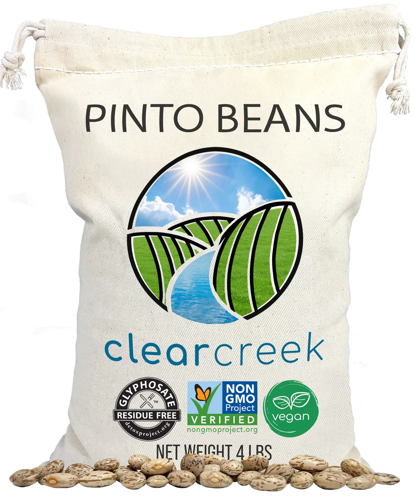
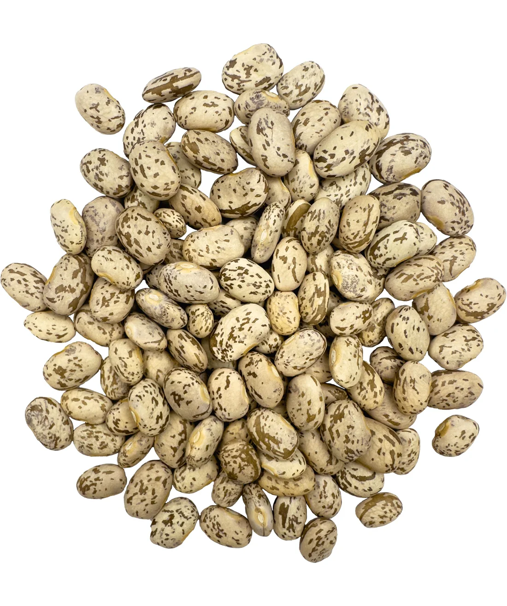
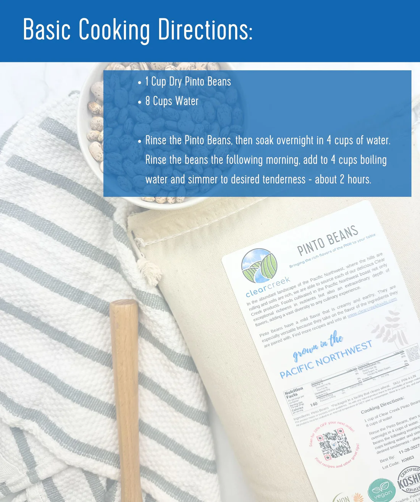
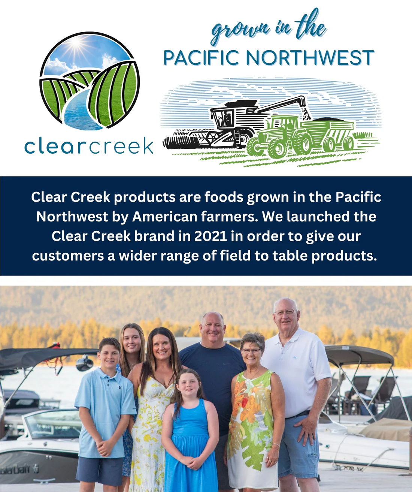

By Palouse Brand · 4 lb.
Buy on Amazon →Health & Certification Facts
Our Evaluation
Beans are a staple in most American kitchens and one of the most pesticide-exposed legumes on the market. Glyphosate — the active ingredient in Roundup — is commonly used as a pre-harvest desiccant on conventional beans, meaning it is sprayed directly on the crop shortly before harvest to speed up drying. This practice results in glyphosate residues directly on the food itself, not just in the soil.
Clear Creek Pinto Beans by Palouse Brand are Certified Glyphosate Residue Free by The Detox Project — independently lab-tested with non-detect results for glyphosate and its metabolite AMPA at the lowest government-recognized detection limits. They are grown on family farms in the clean soils of Washington's Pacific Northwest, Non-GMO, Certified Kosher, and non-irradiated.
For a product this simple — dried beans — the Glyphosate Residue Free certification is the most meaningful quality marker available. This is the brand we trust and use in our own home.
Per Clear Creek (Palouse Brand)
Per The Detox Project
Affiliate Disclosure
This page contains affiliate links. If you make a purchase through our links, we may earn a commission at no extra cost to you. Clear Creek was selected entirely on merit — we evaluated this product before any affiliate relationship existed.
Bonham Gold Label Evaluation
Contaminant Status
A transparent breakdown of every contaminant category and what is known — or not known — about this specific product.
Certified Glyphosate Residue Free by The Detox Project. Family farmed in Washington's Pacific Northwest. Non-GMO, non-irradiated, and Kosher certified. These are the beans our family uses.
Buy on Amazon →